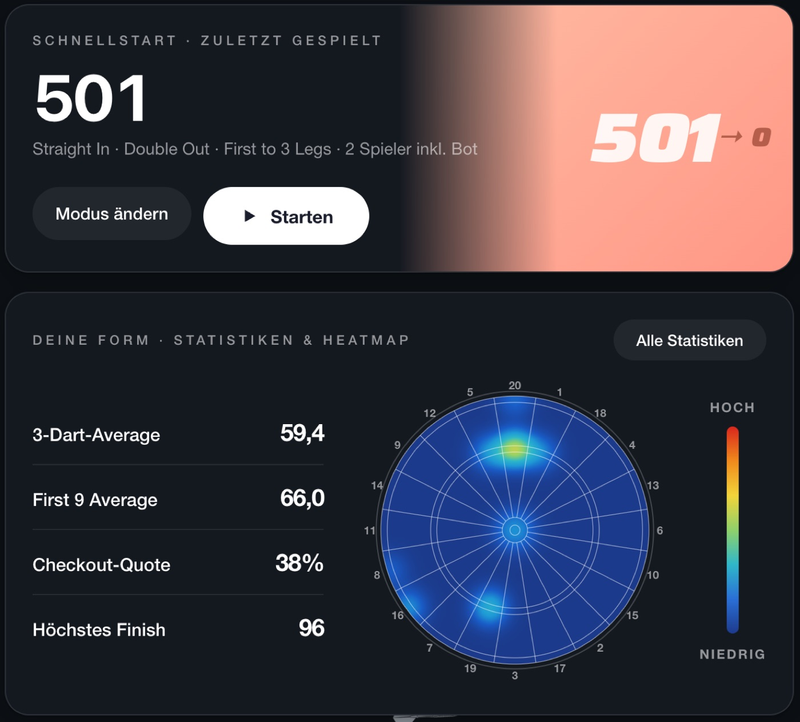
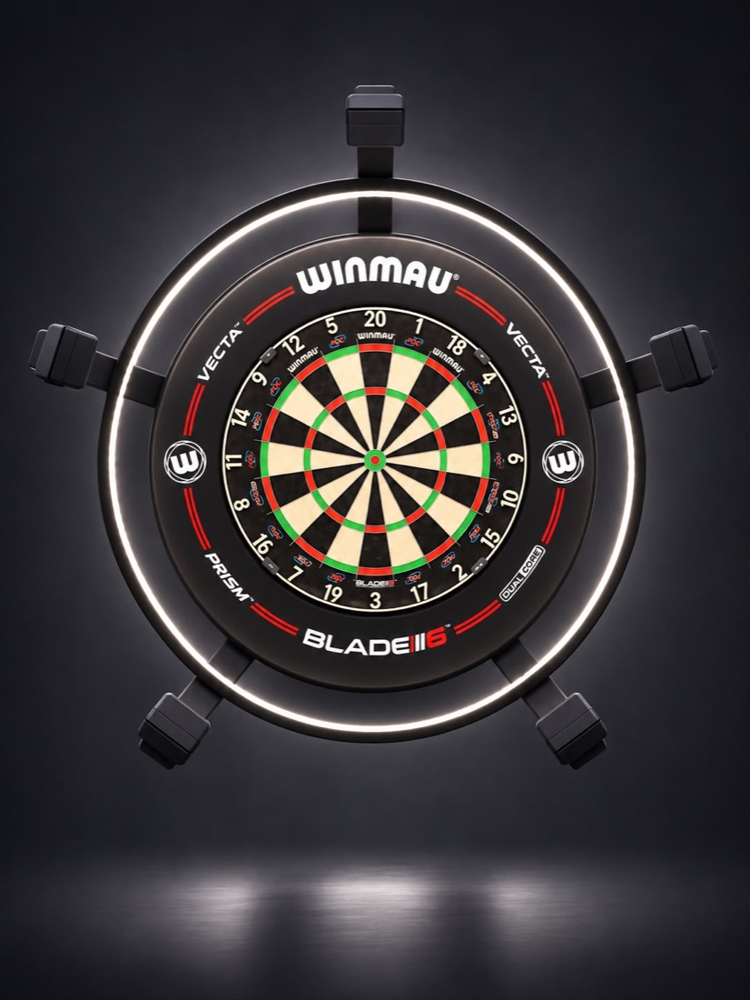
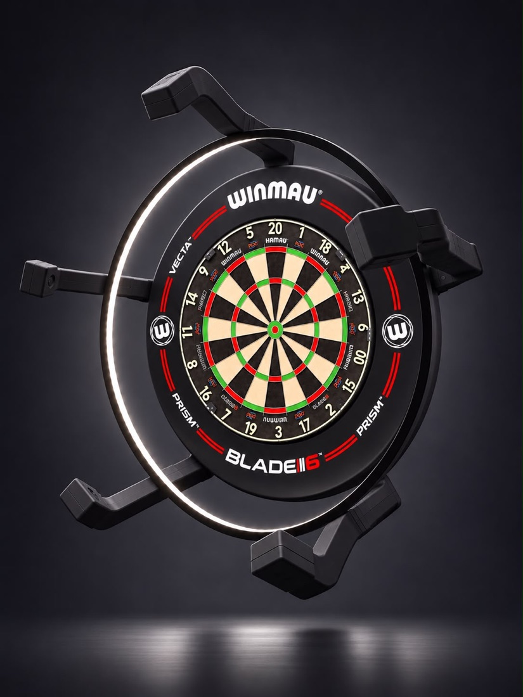
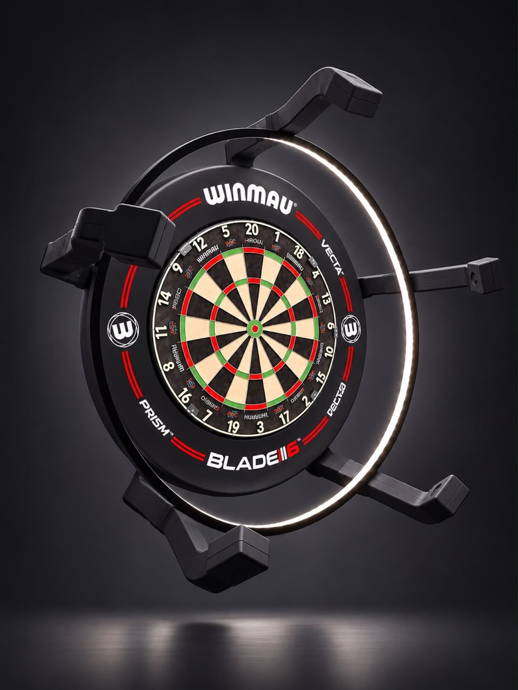

Du wirfst.
DARTRIO zählt.
Das neue Dart-Zählprogramm: Fünf Kameras rund um dein Board erkennen jeden Dart und tragen die Punkte automatisch ein. Mit Heatmap, Statistik und Bull-Off – für Mac und Windows.

Konzentrier dich aufs Werfen.
Alles andere übernimmt die App – vom Bull-Off bis zum Checkout.
Automatisches Scoring
Fünf Kameras sehen jeden Dart aus einem anderen Winkel. DARTRIO berechnet daraus, wo er steckt, und zählt sofort.
Heatmap deiner Würfe
Sieh auf einen Blick, wo deine Darts landen – und wo du noch Punkte liegen lässt.
Statistik & letzte Partien
3-Dart-Average, First 9, Checkout-Quote und höchstes Finish. Deine letzten Partien bleiben gespeichert.
Lieber ehrlich als falsch
Ist ein Dart nicht eindeutig – etwa direkt am Draht – zeigt DARTRIO ein „?“ statt falscher Punkte. Ein Tipp genügt.
Schnellstart
Dein zuletzt gespieltes Spiel ist mit einem Klick wieder da – 501, Double Out, Legs, Gegner.
Offline & mit Updates
Kein Konto, keine Cloud. Neue Versionen meldet DARTRIO selbst – ein Klick, und alles ist aktuell.
Klar, ruhig, auf den Punkt.
Große Zahlen, die man vom Oche aus lesen kann – in Hell und Dunkel.

Deine Form auf einen Blick
Gleich auf der Startseite: das zuletzt gespielte Spiel zum Weiterspielen, deine wichtigsten Werte und die Heatmap aller Treffer.
- 3-Dart- und First-9-Average über alle Spiele
- Checkout-Quote und höchstes Finish
- Heatmap – von „kalt“ bis „heiß“
- Letzte Partien mit Ergebnis und Average


Einmal anbringen. Für immer zählen lassen.
Der DARTRIO-Ring trägt fünf Kameras und eine LED-Beleuchtung rund um dein Board – abgestimmt auf die Software.



Im Komplettset enthalten
- 5 Kameras – im Kreis um das Board, jede aus ihrem eigenen Winkel
- Montagering mit LED-Licht – gleichmäßige Ausleuchtung für sichere Erkennung
- DARTRIO-Software für Mac und Windows, inklusive Updates
- Kabel und Montagematerial
Schon Kameras?
Du hast bereits fünf USB-Kameras am Board? Dann reicht die Software allein. DARTRIO kalibriert sich selbst und ordnet die Kameras automatisch zu.
Preise ansehenIn drei Schritten startklar.
Anbringen & installieren
Kameraring ums Board, Kameras an den Rechner, DARTRIO installieren.
Kalibrieren
Board leer lassen und DARTRIO starten. Scheibe und Kameras findet die App selbst.
Spielen
Spiel wählen und werfen. Darts ziehen – die Aufnahme wird automatisch gebucht.
Einmal zahlen. Kein Abo.
Updates sind immer inklusive.
DARTRIO Software
inkl. MwSt.
- Vollversion für Mac und Windows
- Autoscoring, Heatmap, Statistik, Bot-Gegner
- Alle Updates inklusive
- Für eigene Kameras (5 USB-Kameras nötig)
DARTRIO Komplettset
inkl. MwSt., zzgl. Versand
- Kameraring mit 5 Kameras und LED-Licht
- DARTRIO Software inklusive
- Kabel und Montagematerial
- Alle Updates inklusive
Neueste Version
Für Mac und Windows.
Mac
Für dich- DMG öffnen, DARTRIO auf „Programme“ ziehen
- Beim ersten Start: Systemeinstellungen › Datenschutz & Sicherheit › „Dennoch öffnen“
- Kamera-Zugriff erlauben
Windows
Für dich- Setup starten und den Schritten folgen
- Falls Windows warnt: Weitere Informationen › Trotzdem ausführen
- DARTRIO über Startmenü oder Desktop öffnen
Gut zu wissen
Brauche ich Internet?
Nein. DARTRIO läuft komplett auf deinem Rechner. Internet wird nur genutzt, um nach Updates zu schauen.
Welches Board brauche ich?
Ein normales Steeldart-Board nach Norm. DARTRIO kalibriert sich bei jedem Start selbst.
Kann ich meine eigenen Kameras nutzen?
Ja – mit der Software allein. Du brauchst fünf USB-Kameras, gleichmäßig um das Board verteilt, und gleichmäßiges Licht.
Was passiert, wenn DARTRIO sich nicht sicher ist?
Dann zeigt DARTRIO ein „?“ statt falscher Punkte. Du tippst das richtige Feld an – fertig.
Kostet DARTRIO ein Abo?
Nein. Du zahlst einmal, alle Updates sind inklusive.